UNITY VR: HTC VIVE
Maya for VR |
VIVE Setup |
[A] SteamVR app |
[B] Project Set-up
[C] Pick-Ups |
[D] Teleportation |
[E] Target Practice |
[F] Create a Hinged Door
This tutorial covers the basic steps for creating a Unity Project to explore key HTC VIVE features.
Download these files:Sample 3D Room Files (FBXs and PNGs) and Target Practice Ding Audio and Script.
MAKING 3D MODELS FOR UNITY AND VR:
Set your Maya file to Meters: click the little running-man icon in the lower-right corner. Click "Settings" in the left column and under Working Units set Linear from centimeter to Meter. Hit [Save], and now when we create a new cube it is 1x1x1 meters (Unity assumes a player characetr is about 2 meters tall).
Create a scene in Maya (a typical living room is about 7x7 meters). Use Extruded meshes (avoid unwelded Combines).
Name each object in the Channel Box.
Keep polygon counts low: try to have no objects exceed 1k tri polys. To view polygons, open Display > Heads UP Display > PolyCount, and note the triangles (“tris”) for selected objects.
Texture all objects: Create at least a solid color .PNG. In the Hypershade, create a Blinn material for each texture. (Unity does not use Maya "Arnold" materials).
File > Export Selection each object as an FBX file, naming the file for the object.
NOTE: Normally we export objects from world center, but in this case if we export each object in their original arrangements around the space, we can easily reproduce that arrangement in Unity by dragging the objects from the Project panel into the Hierarchy.
Kitboxing refers to the 3D game practice of making objects that are meant to be re-used in many scenes, and such objects should be exported from Maya’s world center, after Freezing Transforms. |
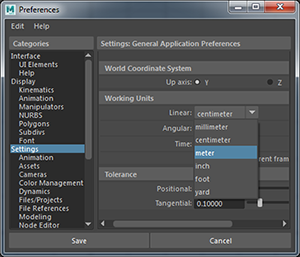
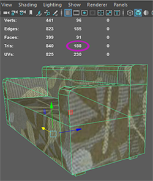
|
| 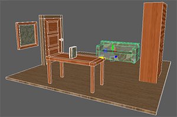 |
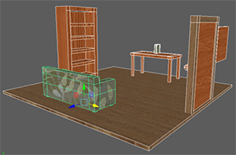 |
TO SET UP THE HTC VIVE:
1. Take all VIVE parts and tripods out of the packages.
2. Plug the hand controllers into the micro-USB chargers to be sure they are powered (2 hours to go from empty to full).
3. Open and raise the tripods to their fullest height. Be sure all fasteners are tight.
4. Attach VIVE gyroscopes to tripods. Connect power cords. Position tripods at opposite corners of a rectangular play area and clear all obstruction from this area. Position gyroscopes to face each other (Lights turn green when calibrated).
|
5. Attach Headset wires to Hub (orange side: power, USB, and HDMI) and then connect the Hub HDMI (blue side) to the computer. Leave headset to rest on the floor in play area middle.
6. When it is time to play, take the hand-controllers off the chargers, press the on-buttons (below touchpads) and place them on the floor by the headset.
7. To get hologram walls to shwo safe play boundaries, define the play area with Room Scale Setup. NOTE: The VIVE will often work without running room setup, but doing so is safer (hologram walls) and generally makes the VIVE run more reliably.
|
Open the SteamVR app menu and choose
"Run Room Setup"
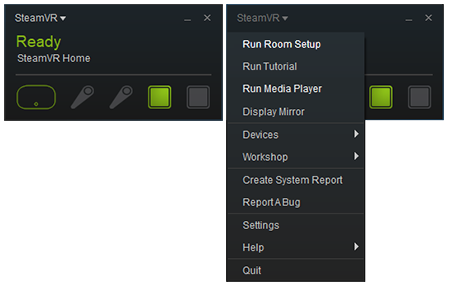
|
Click the [ROOM-SCALE] button.
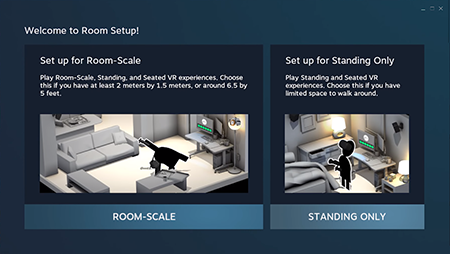 |
Be sure headset and activated hand-controlelrs are placed on the floor in the middle of the play area. Hit [NEXT]
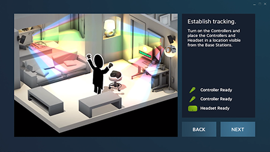 |
Hit [CALIBRATE FLOOR], and then [NEXT].
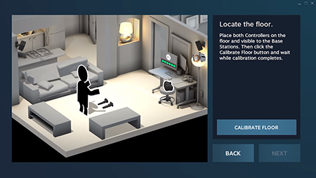 |
Pick up controllers, stand in a corner of play area, hold down the triggers (underside) and walk the perimeter of the intended play space. If the space is too small this will fail.
Try again!
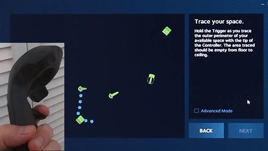 |
The minimum spec are 6'x6', but larger rectangles tend to work better.
If the space is sufficient, it will turn into a green quad. We can hit [NEXT]
and Setup is complete!
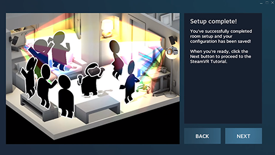 |
[PART A] GETTING THE VIVE HARDWARE READY
To run Unity with a VIVE, first install SteamVR on the computer.
1.Download the Steam App: http://bit.ly/2JcrjFK.
2.Mouse over “Library,” find SteamVR.
3.RightClick and choose Install Game.
This is the software that runs the VIVE hardware from the computer (syncs up the Base Stations/ Sonar/ etc), and it will only install on machines with a graphics card powerful enough to run the VIVE.
NOTE: For more information see the InteractionSystem.pdf in Assets > SteamVR > InteractionSystem downloaded with the SteamVR2 API from the Unity Asset Store.
Setup HTC Vive Environment |
Setup your room space
|
 |
[PART B] STARTING THE STEAMVR INTERACTION SYSTEM
1.Create a new 3D project in Unity.
2. Open Window > General > Asset Store or [Ctrl/Cmd]+[9].
3. Search for “Steam” to find SteamVR Plugin. Download/import all components.
4. When prompted by a pop-up from the SteamVR system, always Accept All.
5. Open the new “SteamVR” folder in your Project. Drag SteamVR > InteractionSystem > Core > Prefabs > [Player] into the Hierarchy. It has a camera, controllers, and inputs for pickups and teleportation. You can hide or replace hand meshes.
6. Delete MainCamera from the Hierarchy.
7. Add a GameObjects > 3D Objects > Cube (20, 0.1, 20) as a platform beneath [Player].
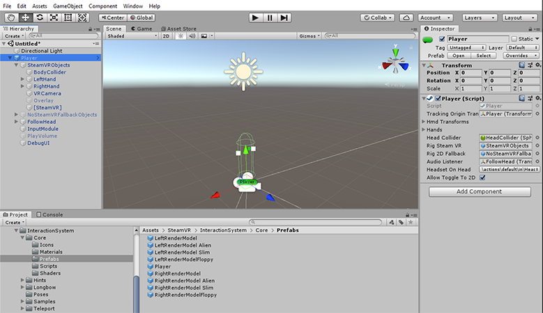
8.Hit the Play button. Because it is this project’s first time playing we MUST say “yes” to some popups:
a) The 1st asks to Generate Actions for SteamVR Input.
Select [Yes]!
b) The 2nd says the project is missing actions.json.
Select [Yes] to generate a .json.
c) 3rd is the SteamVR Input dialog.
The Action Sets should be set to "Default."
Click [Save and Generate], close [x],
and File > Save the Project.
We also start seeing the window for Valve.VR.SteamVR_UnitySettyingsWindow which will appear frequently, and always just needs us to click Accept All.
(after which we will get an affirmative message)
TESTING TIME! Turn on controllers (button below touchpad), don headset. Look/walk around and see your controllers. Be careful to stay within the hologram walls that show space limits.
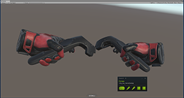 |
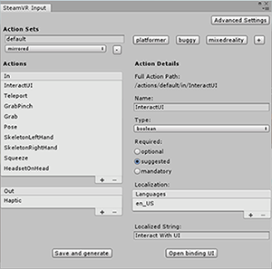
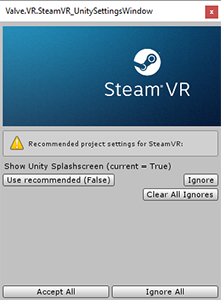 |
[PART C] PICKING THINGS UP WITH VIVE IN UNITY
1. Note the book object on the table object. Select the book.
2. Add Component > Physics > BoxCollider and Rigidbody to the book for physics properties.
3. Drag this script onto the book: Assets > SteamVR > InteractionSystem > Core > Scripts > [Throwable]. This adds 3 Components to this object, each with interesting parameters you can adjust:
"Interactable," "Velocity Estimator," and
"Throwable".
4. Duplicate this book object ([Ctrl/Cmd]+[d]) for around 8 copies. Move the book copuies to make sure none of them intersect.
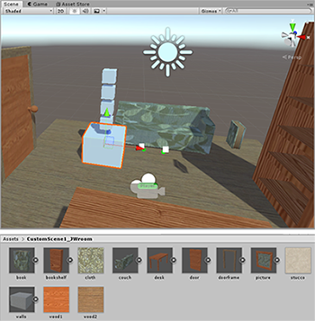TESTING TIME!
Start the scene, don headset. Move VIVE controllers near Cubes to highlight them in yellow. Squeeze triggers to pick them up. Pass cubes hand to hand, toss and catch.
| 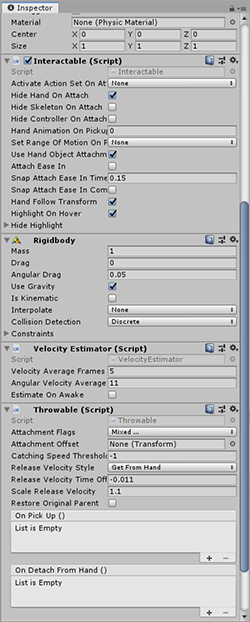 |
[PART D] TELEPORTATION
To avoid nausea, player movement should be handled with teleporting or actual walking. The Player prefab already has Teleportation Inputs ready; we just need to add Teleporting to the scene:
1.Drag SteamVR > InteractionSystem > Teleport > Prefabs > Teleporting into the Hierarchy to set up teleport logic.
2.To make the floor a teleport-able area:
duplicate the floor ([Ctrl/Cmd]+[d])
move copy just above the original floor
Apply (drag onto it) SteamVR > InteractionSystem > Teleport > Scripts > TeleportArea.
3.To create specific teleport spots: drag into the scene Teleport > Prefabs > TeleportPoint and lift up until the white bottom circle is visible.
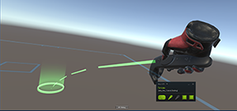
TESTING TIME! Start the scene and don your headset. Press the touchpad to see a laser-arc emit from your controller top to target a location, and release to teleport.
| 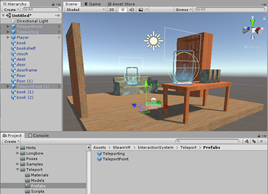
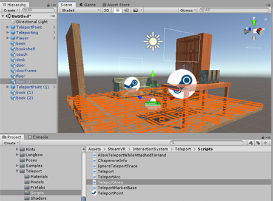 |
[PART E] TARGET PRACTICE
1. Import the Target Practice files from the course site: Ding Audio and the TargetDetect.cs script.
2. In the provided 3D file there is a framed picture mesh next to the door. Select this object in the Hierarchy.
3. Add Component > Physics > Box Collider to this picture object TWICE.
4. Set one BoxCollider to IsTrigger, to register impact for scoring/audio. Move the isTrigger box collider forward a bit, relative to the mesh.
5. Drag the Ding Audio file onto the picture object in the Hierarchy. This adds an AudioSource Component to the object. In the Hierarchy turn off "Play on Awake".
6. Select a book object. In the Inspector create a Tag called "BeanBag". Add this Tag to all the books.
7. Apply the TargetDetect.cs script to the picture object (drag from Project panel to framed picture object).
TESTING TIME! Raise speaker volume, start scene, don headset. Pick up and throw cubes at the target. When you hit the target you should hear the “Ding” sound clip play!
|
|
[PART F] CREATE A HINGED DOOR
1.Import the Doorframe and a Door. Drag into the Hierarchy and position as desired.
2.To the Doorframe: Add Component > Physics > Box Collider and RigidBody.
Set the Doorframe Rigidbody to IsKinematic so it does not move.
3.To the Door: Add three Physics Components
Add Component > Physics > Box Collider
Add Component > Physics > RigidBody
Add Component > Physics > Hinge Joint.
4.On the Door Hinge Joint:
Find the "Connected Body" slot. Drag the Doorframe object from Hierarchy into that slot (will only work if Doorframe has a RigidBody and IsKinematic).
The Hinge Axis starts in a corner. Set Axis = 0,1,0 (for a side-hinge), and set X, Y, and Z positions.
Turn on Limits and set Max = 120 and Min = -120.
TESTING TIME! The door will not react to controllers alone, but if you pick up an object and hold it or throw it at the door, the door will swing on its hinge.
| 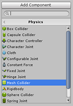
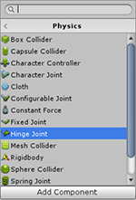 |
|
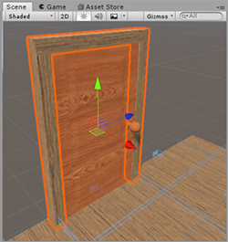
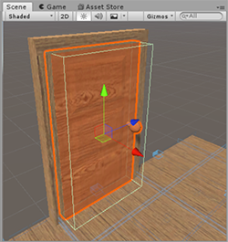
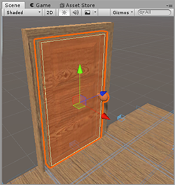
|
|